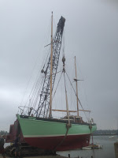
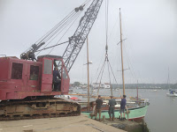
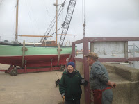
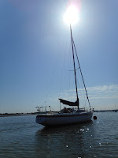
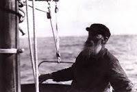
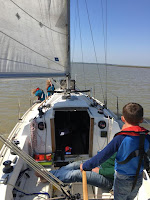
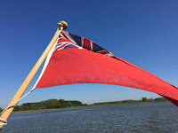

 |
| PD annual return to the river. (these photos from 2016) |
{kind=link}
I was standing on the river wall in Woodbridge, watching at
a little distance while Geoff, Steve and Tim from the boatyard concentrated on
their annual task of lifting Peter Duck
back into the river. There’d been a bitter northerly the day before, driving
rain and gusts predicted to reach 40mph. We’d all been relieved to Abort Mission.
They said they were worried about my boat: I said I was bothered about their
backs. Probably the truth was that none of us fancied getting soaked and frozen
that Monday morning. Suddenly a day spent catching up on office chores had seemed
an attractive option.
{kind=link}
Today the weather was bright but chilly, the breeze stiff-ish,
threatening to buffet PD's precious hull sideways as Geoff and Tim hung onto
the warps and turned her precisely while Steve drove the crane. In calm
conditions only one person is required, guiding both of the warps – on those days I almost
feel I’d have a go myself. Today Geoff
and Tim needed all of their strength to hold her steady through the 180°
rotation. The chain, running down through the sheaves, from the jib to the hook
that holds the broad webbing straps around her passed neatly between the main
and mizzen masts. Just as it always does. A controlled set down. PD was back in the water, in her element.
{kind=link}

I love watching that manoeuvre. Never fails, year after year, as the annual routine of fitting out reaches its full stop (or at least a colon: there’s always one more job that I’m promising myself to do when we’re settled on the mooring). Then I’m back on board, my moment to take charge, everything feeling unfamiliar. Can I even remember how the engine starts? The lines are cast off. Geoff shouts. I’m powering away from the jetty so as not to be blown sideways into the shallows. Soon confidence returns as we reach the main channel and I remember I can do this thing after all: I’m in command of my own boat. No need to look back or to wave: Geoff, Steve and Tim have already dispersed to their other tasks. For them it’s a job: for me a ritual. |
| 2016 was the last time my mother, then aged 92, oversaw the ritual |
{kind=link}
My brain was faltering as I failed to remember where,
exactly, the Spanish Rias were (answer= Galicia, south of Cape Finisterre on the
border with Portugal). “I’d have thought
there’d be plenty of people wanting to crew for you going that way,” I
offered. “My daughter likes to come," he answered, "But she’s got her own life now.” He wasn’t grumbling but accepting the situation:
you spend happy years growing your crew then, just as they’re really useful,
they’re away, lives of their own….
I had Bertie with me that day, which was a joy, but there
was better to come. Frank, one of my
older children, and his wife Alice, had amazed us all at the end of the
previous season by buying a yacht, Blossom, an Artenko 35. For a moment I was sad that they'd no longer be available for delivery trips on Peter Duck but, like my friend on the river wall, I accepted the inevitable and was glad for them. Lives of their own...
 |
| Blossom |
{kind=link}
Blossom is elderly (for a GRP yacht -- probably about the same age as the current editor of the Yachting Monthly?) and had spent
the winter in a shed having technical things done to her. Now she too was back in
the River Deben and ready for adventure. Frank wanted to take her to distant Essex for
the weekend. His children were at school, Alice was at work, he needed a crew... Ok, it wasn’t the Spanish Rias
exactly but to be requested as a crew by one’s own child - oh yes!
He turns his head, but in his ear,
The steady trade winds run,
And in his eye the endless waves
Ride on into the sun.
(from a poem by Laurence Binyon, used by Arthur Ransome as the heading for the first chapter of Peter Duck)
 |
| Carl Herman Sehmel, the original Peter Duck |
{kind=link}
Blossom’s First
Voyage passed sweetly and without incident. Bertie had signed on as well. He
and Frank could easily have managed without me -- Frank could have managed alone -- but I was the Ancient
Mariner figure, a version of the old Baltic seaman who accompanied Arthur Ransome
and Evgenia Schelepina in Racundra in
1922, the original for Ransome’s fictional ‘Peter Duck’ character. I was there for my
local lore, my inarticulate fund of experience, my long white beard.
 |
| Blossom's own crew bring her home |
{kind=link}
We left quite early in the morning, crossed the Deben bar
without incident and set a course out to sea; we rounded the Cork Sand and pointed
so'west by west for distant Essex. When we arrived, late that evening, we were met by the
dancing figures of Alice and the children. They would take over now.
{kind=link}

Blossom spent the sunny Bank Holiday weekend on the River Blackwater, then her own crew sailed her home. On Monday afternoon I received a text from my oldest granddaughter (age 10), “We have crossed the Bar”. It felt like a passing of the generations.